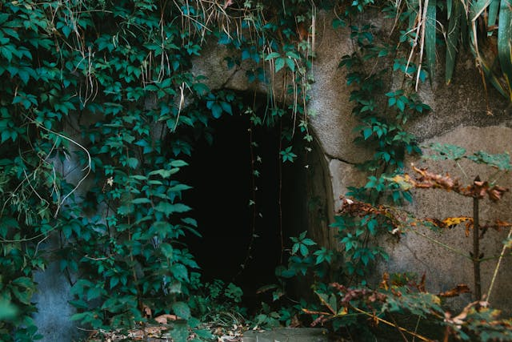

You keep running until you've come to a wide valley, you can tell there's enough distance between you and who knows what, that you can take in your surroundings. You can hear a river crashing around in the distance further in front of you. To your left is, what looks to be abandoned hut/cave that was manmade. There is still a good amount of distance, not much time has passed but you don't have much longer. You take this time to see what your injuries are and if you have any supplies in your pockets to figure which way to go:
OR
